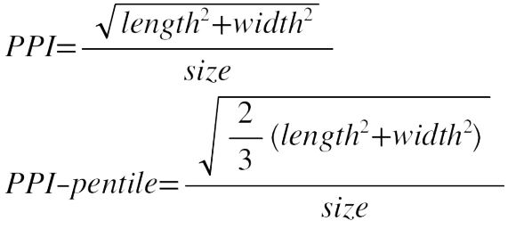

PPI即每英寸所拥有的像素数目。pixels per inch 所表示的是每英寸所拥有的像素（pixel）数目。当屏幕的PPI当达到一定数值时，人眼无法分辨不出颗粒感。
RGB排列的屏幕PPI为标准值，Pentile排列或者其它规则排列的OLED屏幕均会有一定的像素折损。Pentile排列主要是通过相邻像素公用子像素的方法来减少子像素的个数，从而达到低分辨率模拟高分辨率的效果。
标准RGB排列PPI，计算方法很简单，用屏幕长跟屏幕高的像素数计算出屏幕对角线(此处说的对角线，是勾股定理里的弦，直角三角形的斜边)的像素数（直角三角形，勾股定理 a^2+b^2=c^2），然后再用对角线的像素数除以屏幕尺寸就是PPI了，公式表达为 PPI=√(X^2+Y^2)/Z （X：横向(长度)像素数；Y：纵向(宽度)像素数；Z：屏幕尺寸）。
计算公式：
从上边公式可以看出，屏幕长跟屏幕高的像素数计算出屏幕对角线的像素数 除以PPI可以得到屏幕尺寸。
总结：屏幕PPI值达到250以上可以获得不错的清晰度体验，所以购买的新设备屏幕PPI必须达到250以上，约高约好